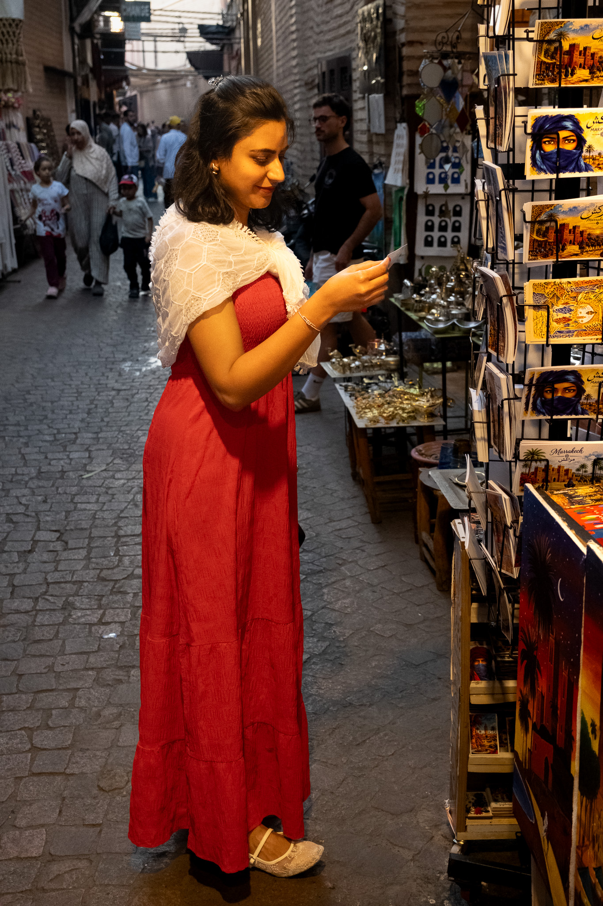

November 2026
Marrakech, Morocco
A city slow-cooked by time, where centuries of history, intense human expressions, and the rhythms of everyday life come together naturally. Chaotic, imperfect, yet somehow beautifully balanced.


